29 cljplot extras
The examples of the original cljplot - its sketches and the showcase images of its README - rebuilt with cljplot2. Styling differs from the originals; the chart types and what they show are the same. Data are the originals’ where available (Old Faithful, Seattle weather), otherwise synthetic and seeded.
Not here: the image mosaics, the animation, and the lattice and Vega examples (their own galleries).
(ns galleries.cljplot-extras
(:require [clojure.java.io :as io]
[clojure2d.color :as c]
[clojure2d.core :as c2d]
[clojure2d.pixels :as p]
[fastmath.complex :as cx]
[fastmath.core :as m]
[fastmath.fields :as f]
[fastmath.interpolation.gp :as gp]
[fastmath.kernel :as k]
[fastmath.optimization :as opt]
[fastmath.random :as r]
[fastmath.stats :as stats]
[fastmath.vector :as v]
[cljplot2.chart :as chart]
[cljplot2.core :as plot]
[cljplot2.data.field :as field]
[cljplot2.data.series :as series]
[cljplot2.data.vector-field :as vf]
[cljplot2.graphics.font :as font]
[notebook-utils :as nu])
(:import [java.awt Font]))(def examples-url "https://github.com/generateme/cljplot/blob/master/sketches/examples.clj")(def bayesian-url "https://github.com/generateme/cljplot/blob/master/sketches/bayesian_optimisation.clj")(defn- showcase-url
"URL of an old cljplot showcase image."
[file]
(str "https://github.com/generateme/cljplot/blob/master/results/" file))#'galleries.cljplot-extras/showcase-url29.1 Statistics
29.1.1 Q-Q plot
Quantiles against quantiles: a sample against a distribution (:x-distribution), per group with a quartile line each; then two distributions against each other, no data at all, labelled for the legend.
Source: cljplot - qqplot.
(let [g (r/rng :mersenne 1)
sample (vec (concat (for [_ (range 300)] {:v (r/grandom g) :group "normal"})
(for [_ (range 300)] {:v (r/sample (r/distribution :t {:degrees-of-freedom 3 :rng g})) :group "t(3)"})))]
(plot/render-image
(plot/arrange [{:data sample :mapping {:y :v :color :group}
:charts [(chart/qq {:x-distribution [:normal]})]
:labels {:title "samples against the normal" :y "sample quantiles"}}
{:charts [(chart/qq {:x-distribution [:normal] :y-distribution [:t {:degrees-of-freedom 3}]
:label "t(3)" :mapping {:color :label}})
(chart/qq {:x-distribution [:normal] :y-distribution [:t {:degrees-of-freedom 30}]
:label "t(30)" :mapping {:color :label} :line false})]
:labels {:title "t distributions against the normal"}}]
{:columns 2})
{:width 1000 :height 450}))
Two groups against each other: one column per group (the shorter padded with nils, which the chart drops), the longer one interpolated.
Source: cljplot - qqplot. Data: Old Faithful geyser eruptions, R datasets package faithful (Härdle 1991; Azzalini & Bowman 1990); licence: Part of R (GPL-2 | GPL-3).
(let [faithful (nu/dataset :faithful)
short-wait (map :eruptions (filter #(< (double (:waiting %)) 70.0) faithful))
long-wait (map :eruptions (filter #(>= (double (:waiting %)) 70.0) faithful))
rows (take (max (count short-wait) (count long-wait))
(map (fn [a b] {:short a :long b}) (concat short-wait (repeat nil)) (concat long-wait (repeat nil))))]
(plot/render-image
{:data rows :mapping {:x :short :y :long}
:charts [(chart/qq)]
:labels {:title "Old Faithful eruptions: after short against after long waits" :x "waiting < 70 min" :y "waiting >= 70 min"}}
{:width 550 :height 500}))
29.1.2 P-P plot
Probabilities against probabilities: a t sample’s empirical CDF against the normal CDF, y = x for reference.
Source: cljplot - ppplot.
(let [d (r/distribution :t {:rng (r/rng :mersenne 2)})]
(plot/render-image
{:data (repeatedly 2000 (fn [] {:v (r/sample d)}))
:mapping {:y :v}
:charts [(chart/pp {:x-distribution [:normal] :size 2})]
:labels {:title "P-P: a t sample against the normal" :y "sample probabilities"}}
{:width 550 :height 500}))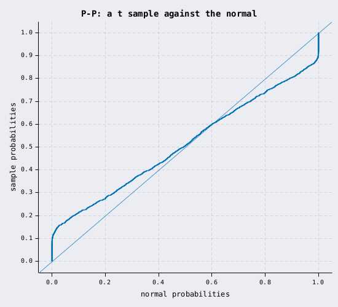
29.1.3 Kernel densities
One sample, a density per fastmath KDE kernel; chart/function takes the map kernel -> density.
Source: cljplot - kernel densities.
(let [g (r/rng :mersenne 3)
data (concat (repeatedly 500 #(r/grandom g 4.5 0.1))
(take 10000 (remove #(== (m/round (* (double %) 10.0)) 30.0)
(repeatedly #(+ (r/grandom g 2.0 0.1) (* (r/drandom g) (r/drandom g 1.0 3.0)))))))
kernels (:kde k/kernel-list)]
(plot/render-image
{:charts [(chart/function {:f (mapv (fn [kernel] [(name kernel) (k/kernel-density kernel data)]) kernels)
:domain [1.0 6.0] :width 1.5 :mapping {:color :function}})]
:scales {:color {:title "kernel"}}
:labels {:title "Kernel densities of one sample"}}
{:width 800 :height 550}))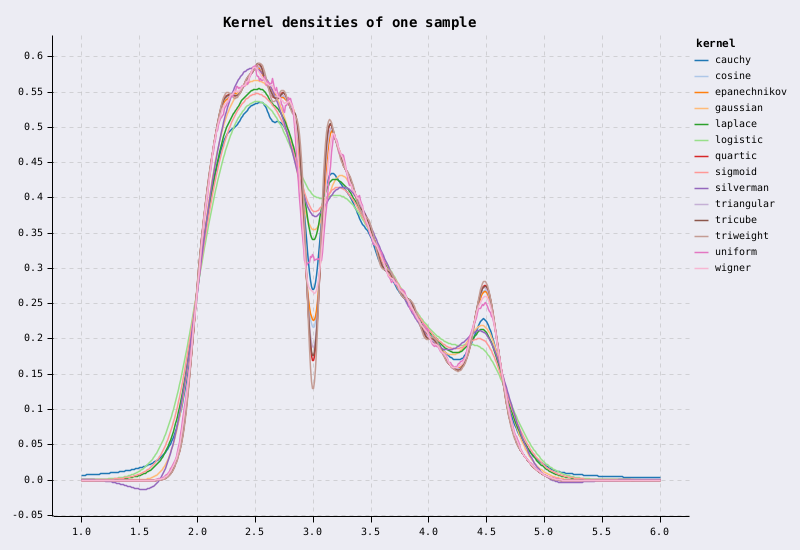
29.1.4 Gaussian process
A Gaussian process through ten noisy samples of a sine: the mean, 50 % and 95 % bands, the true function.
Source: cljplot - Gaussian process prediction.
(let [g (r/rng :mersenne 4)
truth (fn [x] (+ 10.0 (m/sin (* -0.7 (double x)))))
xs (repeatedly 10 #(r/drandom g -5 5))
ys (map #(+ (truth %) (r/grandom g 0.0 0.0005)) xs)
process (gp/gaussian-process xs ys {:normalize? true :kernel (k/kernel :gaussian {:sigma 0.8}) :noise 0.0005})
xtest (m/slice-range -5.0 5.0 200)
band (mapv (fn [x [mu sd]] {:x x :mu mu :lo95 (- mu (* 1.96 sd)) :hi95 (+ mu (* 1.96 sd))
:lo50 (- mu (* 0.67 sd)) :hi50 (+ mu (* 0.67 sd))})
xtest (gp/predict-all process xtest true))]
(plot/render-image
{:data band :mapping {:x :x}
:charts [(chart/ribbon {:mapping {:ymin :lo95 :ymax :hi95} :color [130 170 230]})
(chart/ribbon {:mapping {:ymin :lo50 :ymax :hi50} :color [70 120 200]})
(chart/function {:f truth :color [215 48 39] :width 1.5})
(chart/line {:mapping {:y :mu} :color :black :width 2})
(chart/scatter {:data (map (fn [x y] {:x x :y y}) xs ys) :mapping {:y :y} :size 9 :color :black})]
:labels {:title "Gaussian process: mean, 50 % and 95 % bands, the true function (red)" :y nil}}
{:width 800 :height 500}))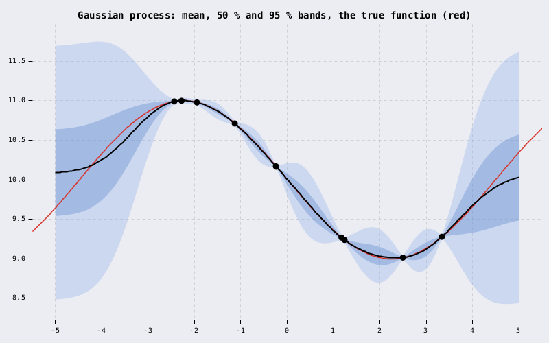
A posterior sample through three points, with its 95 % band (the posterior standard deviation).
Source: cljplot - Gaussian process posterior sample.
(let [xs [-4 1 2] ys [-5 1 2]
process (gp/gaussian-process xs ys {:kernel (k/kernel :gaussian {:sigma 0.8}) :noise 0.005})
xtest (m/slice-range -5.0 5.0 60)
rows (mapv (fn [x [y sd]] {:x x :y y :lo (- y (* 1.96 sd)) :hi (+ y (* 1.96 sd))})
xtest (gp/posterior-samples process xtest true (r/rng :mersenne 5)))]
(plot/render-image
{:data rows :mapping {:x :x :y :y}
:charts [(chart/ribbon {:mapping {:ymin :lo :ymax :hi} :color [130 170 230] :interpolator :cubic})
(chart/line {:color :black :width 2 :interpolator :cubic})
(chart/scatter {:data (map (fn [x y] {:x x :y y}) xs ys) :size 9 :color :black})]
:labels {:title "Gaussian process: a posterior sample with its 95 % band"}}
{:width 800 :height 500}))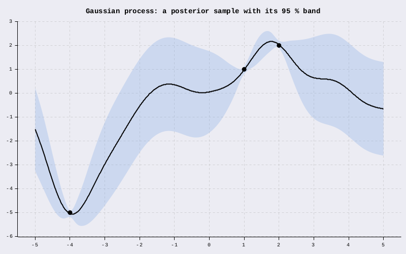
Many samples: 30 posterior curves of a periodic kernel through the three points, 20 prior curves of a Gaussian one.
Source: cljplot - Gaussian process posterior and prior samples.
(let [xs [-4 1 2] ys [-5 1 2]
xtest (m/slice-range -5.0 5.0 40)
g (r/rng :mersenne 6)
periodic (gp/gaussian-process xs ys {:kernel (k/kernel :periodic {:sigma 0.5 :periodicity 8.0}) :noise 0.0001})
gaussian (gp/gaussian-process xs ys {:kernel (k/kernel :gaussian) :noise 1.0e-7})
curves (fn [sample-fn n] (vec (for [i (range n) [x y] (map vector xtest (sample-fn))] {:x x :y y :i i})))
panel (fn [rows title points?]
{:data rows :mapping {:x :x :y :y :group :i}
:charts (cond-> [(chart/line {:color [0 0 0 90] :interpolator :cubic})]
points? (conj (chart/scatter {:data (map (fn [x y] {:x x :y y}) xs ys) :mapping {:group nil}
:size 9 :color [215 48 39]})))
:labels {:title title}})]
(plot/render-image
(plot/arrange [(panel (curves #(gp/posterior-samples periodic xtest false g) 30) "30 posterior samples (periodic kernel)" true)
(panel (curves #(gp/prior-samples gaussian xtest g) 20) "20 prior samples (Gaussian kernel)" false)]
{:columns 2})
{:width 1000 :height 450}))
29.1.5 Bayesian optimisation
fastmath’s bayesian-optimization maximizes a black box: each step fits a Gaussian process to the points seen so far and evaluates where the expected improvement is highest (dashed rule). Three steps of one run:
Source: cljplot - Bayesian optimisation.
(defn target
"1D target with two bumps, the higher at x = 2."
^double [^double x]
(+ (m/exp (- (m/sq (- x 2.0)))) (m/exp (- (* 0.1 (m/sq (- x 6.0))))) (/ 1.0 (inc (* x x)))))(def bo-1d
(opt/bayesian-optimization target {:bounds [[-2.0 10.0]] :vector-arg? false :init-points 2 :rng (r/rng :mersenne 7)}))(let [xtest (m/slice-range -2.0 10.0 200)
step-plot (fn [i]
(let [{:keys [xs ys gp util-best]} (nth bo-1d i)
band (mapv (fn [x [mu sd]] {:x x :mu mu :lo (- mu (* 1.96 sd)) :hi (+ mu (* 1.96 sd))})
xtest (gp/predict-all gp (map vector xtest) true))]
{:data band :mapping {:x :x}
:charts [(chart/ribbon {:mapping {:ymin :lo :ymax :hi} :color [130 170 230]})
(chart/function {:f target :width 2 :color :black})
(chart/line {:mapping {:y :mu} :color [30 60 160] :dash [8 3]})
(chart/rule {:x (first util-best) :dash [6 4] :width 1.5})
(chart/scatter {:data (map (fn [[x] y] {:x x :y y}) xs ys) :mapping {:y :y} :size 8
:color [0 140 140]})]
:scales {:y {:domain [-1.0 2.5]}}
:labels {:title (str "step " i ", " (count xs) " evaluations") :y nil}}))]
(plot/render-image
(plot/arrange (mapv step-plot [2 6 10]) {:columns 1})
{:width 800 :height 750}))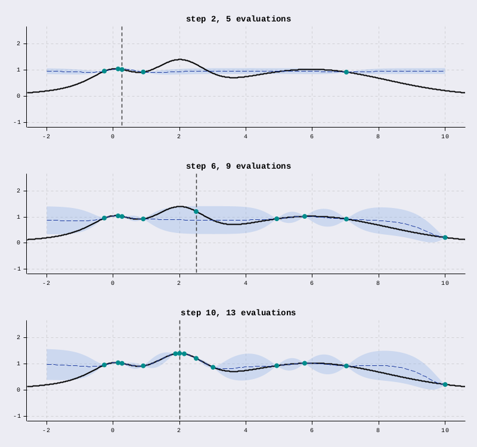
A 2D black box: its contours with every evaluated point, the process mean and its standard deviation after 15 steps.
Source: cljplot - Bayesian optimisation.
(defn black-box
[[x y]]
(let [x (double x) y (double y)]
(* (m/sinc (+ 2.0 x y)) (m/sin (+ x x)) (m/cos (+ y y)) (m/sin (* 2.0 x y)))))(let [bounds {:x [-1.0 0.5] :y [-2.0 -0.5]}
{:keys [xs gp x]} (nth (opt/bayesian-optimization black-box {:bounds [(:x bounds) (:y bounds)] :vector-arg? true
:rng (r/rng :mersenne 8)})
15)
evaluated (map (fn [[a b]] {:x a :y b}) xs)
panel (fn [title f]
{:charts [(chart/field {:f f :domain bounds :n 150})
(chart/contour {:f f :domain bounds :n 150 :color [255 255 255 120]})
(chart/scatter {:data evaluated :mapping {:x :x :y :y} :size 7 :color :black})
(chart/scatter {:data [{:x (first x) :y (second x)}] :mapping {:x :x :y :y} :size 14
:shape \x :color [215 48 39]})]
:scales {:color {:title nil}}
:aspect :iso
:labels {:title title}})]
(plot/render-image
(plot/arrange [(panel "black box and evaluations" black-box)
(panel "process mean" (fn [p] (gp/predict gp p)))
(panel "process std dev" (fn [p] (second (gp/predict gp p true))))]
{:columns 3})
{:width 1000 :height 400}))
29.2 Time series
29.2.1 MA(2)
A moving-average series: each value mixes three consecutive Gaussian shocks.
Source: cljplot - MA(2).
(def ma2
(let [g (r/rng :mersenne 9)
e (vec (repeatedly 502 #(r/grandom g)))]
(mapv (fn [i] (+ (- (double (e (+ i 2)))) (* 0.8 (double (e (inc i)))) (* -0.9 (double (e i))))) (range 500))))(plot/render-image
{:data (map-indexed (fn [t y] {:t t :y y}) ma2) :mapping {:x :t :y :y}
:charts [(chart/line)]
:labels {:title "MA(2): -e(t) + 0.8 e(t-1) - 0.9 e(t-2)" :x "t" :y nil}}
{:width 800 :height 280})
29.2.2 Lag plot
Each value against the one seven steps later: an AR(1) series with rare jumps.
Source: cljplot - lag.
(let [g (r/rng :mersenne 10)
ar (take 10000 (iterate #(+ (* 0.95 (double %)) (r/grandom g) (if (< (r/drandom g) 0.01) 10.0 0.0)) 0.0))]
(plot/render-image
{:data (series/lag-rows ar 7) :mapping {:x :x :y :y}
:charts [(chart/scatter {:size 3 :color [0 0 0 30]})]
:aspect :iso
:labels {:title "Lag 7 of an AR(1) series with jumps" :x "y(t)" :y "y(t+7)"}}
{:width 600 :height 600}))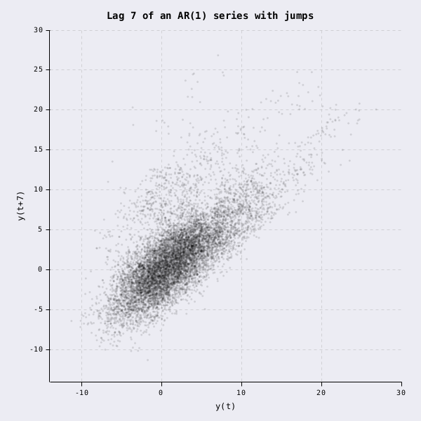
29.2.3 ACF and PACF
The MA(2) series’ autocorrelations cut off after lag 2; its partial autocorrelations decay. Lags outside the band are red.
Source: cljplot - ACF / PACF.
(plot/render-image (plot/acf ma2 {:lags 50 :title "MA(2): ACF and PACF"}) {:width 800 :height 550})
29.3 Functions and fields
(defn fn2d
[[x y]]
(let [x (double x) y (double y)]
(* (- (+ (* x x) (* y y))) (m/sin x) (m/sin y) (m/sin (* x y)))))(def fn2d-domain {:x [(- m/PI) m/PI] :y [(- m/PI) m/PI]})29.3.1 A function of two variables
Source: cljplot - function2d.
(plot/render-image
{:charts [(chart/field {:f fn2d :domain fn2d-domain :n 300})]
:aspect :iso
:labels {:title "-(x^2 + y^2) sin x sin y sin xy"}}
{:width 650 :height 600})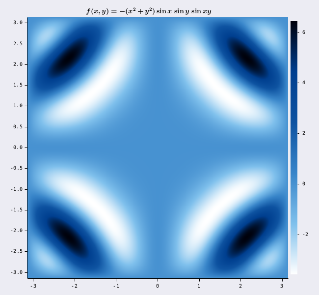
29.3.2 Its contours
Source: cljplot - contour2d.
(plot/render-image
{:charts [(chart/contour {:f fn2d :domain fn2d-domain :n 300 :fill true :levels 12})]
:aspect :iso
:labels {:title "Filled contours of the same function"}}
{:width 650 :height 600})
29.3.3 Value noise
Source: cljplot - value noise.
(plot/render-image
{:charts [(chart/field {:f (fn [[x y]] (r/vnoise x y)) :domain {:x [-6 6] :y [-6 6]} :n 400})]
:scales {:color {:range [:black :white]}}
:aspect :iso
:labels {:title "Value noise"}}
{:width 650 :height 600})
29.3.4 A complex function
Domain colouring: the hue is the argument of f(z), the brightness its magnitude wrapped into bands (:log2 - where |f| + 1 doubles), every pixel computed (:pixel-color).
Source: cljplot - complex.
(plot/render-image
{:charts [(chart/field {:pixel-color (field/domain-color (fn [z] (cx/div (cx/log z) (cx/sin z))))
:domain {:x [-6 6] :y [-6 6]}})]
:aspect :iso
:labels {:title "log(z) / sin(z)" :x "re" :y "im"}}
{:width 650 :height 600})
29.3.5 Field mapping
Uniform points pushed through a composition of fastmath fields (secant ∘ diamond ∘ power).
Source: cljplot - field.
(let [g (r/rng :mersenne 11)
field (f/combine {:type :operation :name :comp
:var1 {:type :operation :name :comp
:var1 {:type :variation :name :secant :amount 1.0 :config {}}
:var2 {:type :variation :name :diamond :amount 1.0 :config {}} :amount 1.0}
:var2 {:type :variation :name :power :amount 1.0 :config {}} :amount 1.0})]
(plot/render-image
{:data (vf/mapped-points field (repeatedly 200000 #(vector (r/drandom g -4 4) (r/drandom g -4 4))))
:mapping {:x :x :y :y}
:charts [(chart/scatter {:size 1 :color [20 40 90 25]})]
:labels {:title "Points mapped through secant . diamond . power"}}
{:width 650 :height 600}))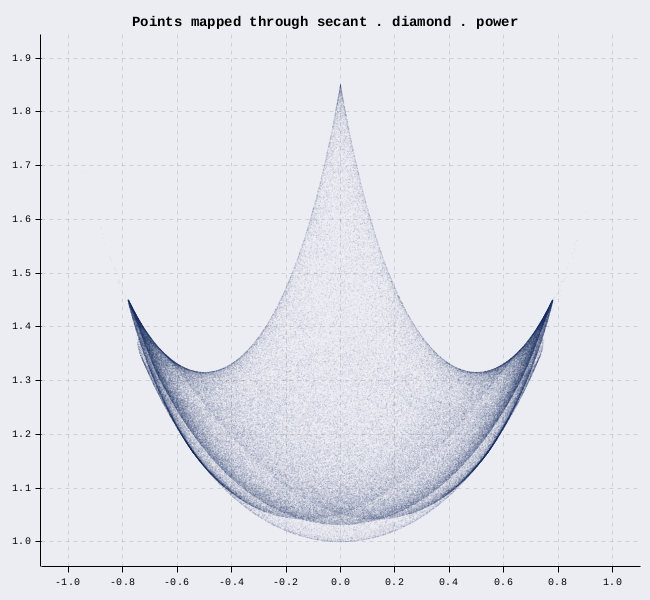
29.3.6 Vector field
Arrows of the hyperbolic field on a shifted grid, over the sine of its heading.
Source: cljplot - vector field.
(let [hyperbolic (f/field :hyperbolic)
heading (f/heading hyperbolic)
domain {:x [-3 3] :y [-3 3]}]
(plot/render-image
{:data (vf/arrows hyperbolic {:domain domain :n 24 :grid :shifted :scale 1.5})
:mapping {:x :x :y :y :xend :xend :yend :yend}
:charts [(chart/field {:f (fn [[x y]] (m/sin (heading (v/vec2 x y)))) :domain domain :n 300})
(chart/segment {:color [90 160 235] :width 1.5 :arrow {:end true :size 5}})]
:scales {:color {:range [:black :white] :title "sin heading"}
:x {:domain [-3 3] :expand [0 0]} :y {:domain [-3 3] :expand [0 0]}}
:aspect :iso
:labels {:title "Hyperbolic field"}}
{:width 650 :height 600}))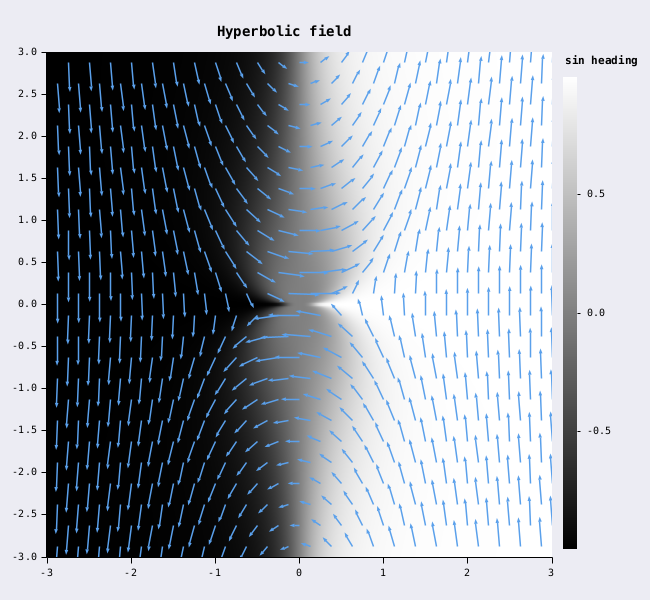
29.3.7 Traces
Points following the exponential field from 3000 random seeds; the traces run off to the right.
Source: cljplot - field trace.
(let [g (r/rng :mersenne 12)
seeds (repeatedly 3000 #(vector (r/drandom g -7 7) (r/drandom g -7 7)))]
(plot/render-image
{:data (vf/traces (f/field :exp) seeds {:steps 200 :step 0.01})
:mapping {:x :x :y :y}
:charts [(chart/scatter {:size 1 :color [20 70 140 20]})]
:scales {:x {:domain [-7 7] :nice false} :y {:domain [-7 7] :nice false}}
:labels {:title "Traces of the exponential field"}}
{:width 650 :height 600}))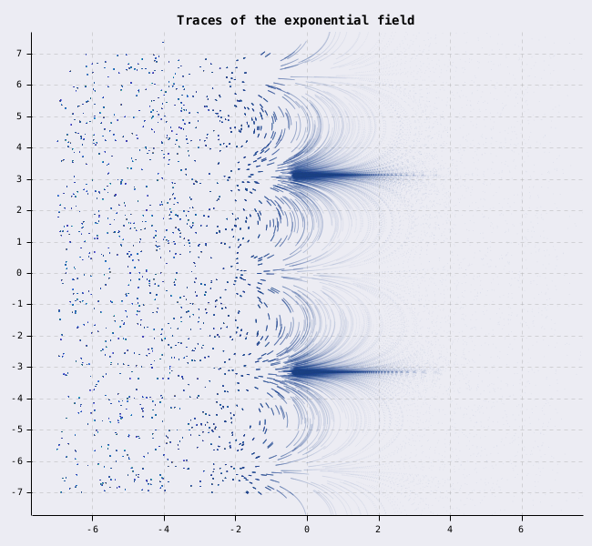
29.4 Point density
29.4.1 Point cloud
600 000 Gaussian points as a binned density raster.
Source: cljplot - point cloud.
(let [g (r/rng :mersenne 13)]
(plot/render-image
{:data (repeatedly 600000 (fn [] {:x (r/grandom g) :y (r/grandom g)}))
:mapping {:x :x :y :y}
:charts [(chart/field {:binned? true :n 300})]
:scales {:color {:range [[10 10 40] [60 40 140] [220 90 120] [255 230 160]] :title "density"}}
:aspect :iso
:labels {:title "600 000 points"}}
{:width 650 :height 600}))
The same kind of cloud drawn by a chart/image callback: it gets the panel’s scales and size and returns an image - here 200 000 translucent pixels.
Source: cljplot2 - chart/image.
(plot/render-image
{:charts [(chart/image {:domain {:x [-4 4] :y [-4 4]}
:f (fn [{:keys [x-scale y-scale size]}]
(let [[w h] size
g (r/rng :mersenne 14)
canvas (c2d/canvas w h)]
(c2d/with-canvas [cv canvas]
(c2d/set-color cv 230 240 255 18)
(dotimes [_ 200000]
(let [x (r/grandom g) y (+ (* 0.6 x) (* 0.8 (r/grandom g)))]
(c2d/rect cv (x-scale x) (y-scale y) 1 1))))
canvas))})]
:theme {:panel {:fill [10 15 40]}}
:aspect :iso
:labels {:title "A correlated cloud drawn by a callback"}}
{:width 650 :height 600})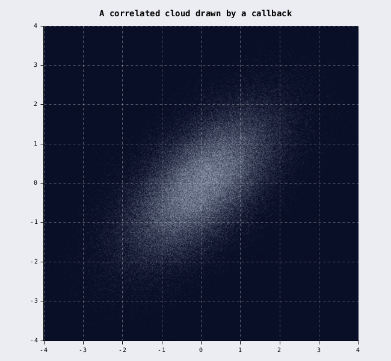
29.4.2 Hexbin
Two Gaussian clusters counted in flat-topped hexagons.
Source: cljplot - binned heatmap.
(let [g (r/rng :mersenne 15)]
(plot/render-image
{:data (repeatedly 10000 (fn [] (if (< (r/drandom g) 0.5)
{:x (r/grandom g) :y (r/grandom g)}
{:x (r/grandom g -10 1) :y (r/grandom g -10 1)})))
:mapping {:x :x :y :y}
:charts [(chart/bin2d {:cell :flat-hex :bins 30})]
:scales {:color {:range :prl-9}}
:aspect :iso
:labels {:title "Two clusters in hexagons"}}
{:width 650 :height 600}))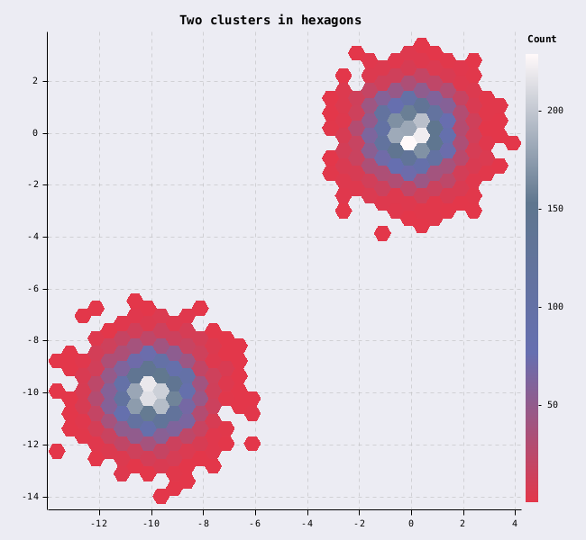
29.4.3 Density contours
Old Faithful: the 2D density at a wide and a narrow bandwidth as filled contour bands (nothing below the lowest level), with the eruptions over them.
Source: cljplot - contour. Data: Old Faithful geyser eruptions, R datasets package faithful (Härdle 1991; Azzalini & Bowman 1990); licence: Part of R (GPL-2 | GPL-3).
(let [faithful (nu/dataset :faithful)
panel (fn [bandwidth levels title]
{:data faithful :mapping {:x :waiting :y :eruptions}
:charts [(chart/contour {:bandwidth bandwidth :levels levels :fill true})
(chart/contour {:bandwidth bandwidth :levels levels :color [0 0 0 60]})
(chart/scatter {:size 4 :color [20 60 120 200]})]
:legend false
:labels {:title title :x "waiting time [min]" :y "eruption time [min]"}})]
(plot/render-image
(plot/arrange [(panel [6.0 0.5] 20 "wide bandwidth, 20 levels") (panel [2.0 0.15] 10 "narrow bandwidth, 10 levels")]
{:columns 2})
{:width 1000 :height 500}))
29.5 Lines and walks
29.5.1 Reference lines
Horizontal, vertical and sloped rules with dashes and widths, under a sine.
Source: cljplot - lines.
(plot/render-image
{:charts [(chart/rule {:y 0 :color :black})
(chart/rule {:y [1 -1]})
(chart/rule {:x m/HALF_PI :dash [10 10] :width 5})
(chart/rule {:x (* 0.75 m/TWO_PI) :dash [10 10] :width 5 :color [128 0 0 100]})
(chart/rule {:slope (/ 1.0 (* 0.75 m/TWO_PI)) :intercept -1 :dash [1 2 5 2] :width 3})
(chart/function {:f m/sin :domain [0 m/TWO_PI]})]
:labels {:title "Rules and a sine"}}
{:width 900 :height 320})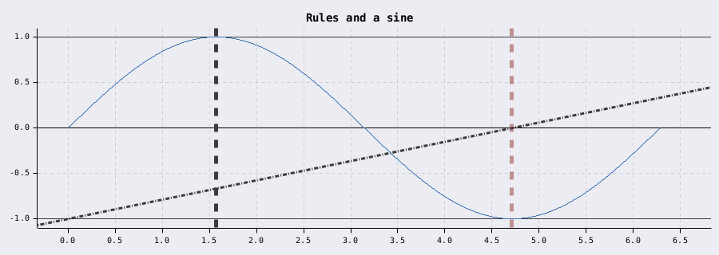
29.5.2 Wrapped random walk
A drifting 2D walk on a torus: leaving the square on one side, it comes back on the other. A row with a NaN y breaks the line at every wrap; :sort false keeps the walk’s order.
Source: cljplot - wrapped random walk.
(defn- wrap-coordinate
"`v` wrapped into [-200, 200)."
^double [^double v]
(- (m/mod (+ v 200.0) 400.0) 200.0))#'galleries.cljplot-extras/wrap-coordinate(let [g (r/rng :mersenne 16)
walk (take 3000 (iterate (fn [[x y]] [(+ (double x) 2.0 (r/grandom g 0.0 2.0)) (+ (double y) 0.5 (r/grandom g 0.0 2.0))])
[0.0 0.0]))
wrapped (map (fn [[x y]] [(wrap-coordinate x) (wrap-coordinate y)]) walk)
rows (mapcat (fn [[[x0 y0] [x1 y1]]]
(if (or (> (m/abs (- (double x1) (double x0))) 200.0) (> (m/abs (- (double y1) (double y0))) 200.0))
[{:x x0 :y y0} {:x x0 :y ##NaN}]
[{:x x0 :y y0}]))
(partition 2 1 wrapped))]
(plot/render-image
{:data rows :mapping {:x :x :y :y}
:charts [(chart/line {:sort false :color [0 50 255 150]})]
:scales {:x {:domain [-200 200]} :y {:domain [-200 200]}}
:aspect :iso
:labels {:title "A random walk on a torus"}}
{:width 650 :height 600}))
29.6 Composite
29.6.1 Stacked strips
One sample, many views on a shared x: jittered points, a rug, a box, a histogram and the extent (mean and range) above a violin, a density and a fine histogram below.
Source: cljplot - strips.
(let [g (r/rng :mersenne 17)
rows (vec (repeatedly 2000 (fn [] {:v (let [u (r/drandom g)]
(cond (< u 0.5) (r/grandom g)
(< u 0.65) (r/grandom g -10 2)
:else (r/grandom g 10 2)))})))
strip (fn [charts] {:data rows :mapping {:x :v} :charts charts :scales {:x {:domain [-20 20]}} :labels {:x nil :y nil}})]
(plot/render-image
(plot/arrange [(strip [(chart/stripplot {:size 6 :color [215 48 39 30] :rng (r/rng :mersenne 18)})])
(strip [(chart/rug)])
(strip [(chart/box)])
(strip [(chart/histogram {:bins 100 :y :count})])
(strip [(chart/extent {:method stats/extent :color :black})])
(strip [(chart/violin)])
(strip [(chart/density {:fill :color})])
(strip [(chart/histogram {:bins 150})])]
{:columns 1 :heights [1 1 1 1 1 3 1.5 1.5]})
{:width 800 :height 800}))
29.6.2 Bubble chart
Seattle’s days: maximal against minimal temperature, coloured by wind, sized (by area) by precipitation.
Source: cljplot - bubble. Data: Seattle daily weather 2012-2015, vega-datasets seattle-weather.csv (NOAA daily observations); licence: vega-datasets is BSD-3-Clause; NOAA data, public domain.
(plot/render-image
{:data (nu/dataset :seattle-weather)
:mapping {:x :temp_min :y :temp_max :color :wind :size :precipitation}
:charts [(chart/scatter {:stroke-color :none})]
:scales {:color {:range (mapv #(c/set-alpha (c/darken (c/color %)) 200) (c/palette :gnbu-9)) :title "wind [m/s]"}
:size {:range [2 40] :area true :title "precipitation [mm]"}}
:labels {:title "Seattle weather 2012-2015" :x "minimal temperature [°C]" :y "maximal temperature [°C]"}}
{:width 750 :height 600})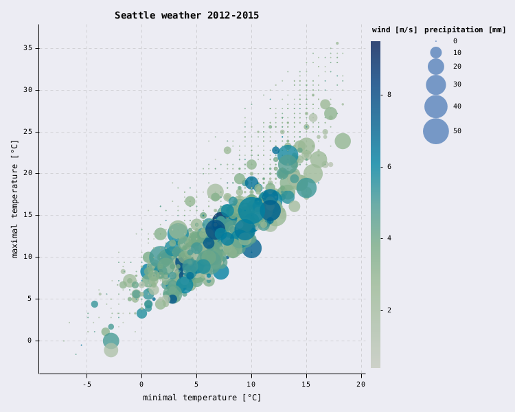
29.6.3 Heatmap matrices
Random values in a 40 x 40 matrix, and a 15 x 15 one with every cell’s value written in it.
Source: cljplot - heatmap matrix.
(let [g (r/rng :mersenne 19)
matrix (fn [n] (vec (for [x (range n) y (range n)] {:x x :y y :value (r/drandom g x (inc y))})))]
(plot/render-image
(plot/arrange [{:data (matrix 40) :mapping {:x :x :y :y :color :value}
:charts [(chart/tile)]
:legend false
:labels {:title "40 x 40" :x "X" :y "Y"}}
{:data (matrix 15) :mapping {:x :x :y :y :color :value}
:charts [(chart/tile {:value-label (fn [{:keys [value]}] (format "%.1f" (double value)))})]
:scales {:color {:range [:yellow :red]}}
:legend false
:labels {:title "15 x 15, annotated" :x "X" :y "Y"}}]
{:columns 2})
{:width 1000 :height 520}))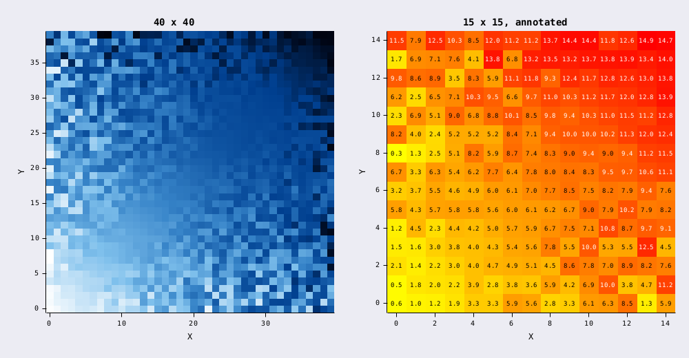
29.6.4 Kernels
Six fastmath kernels as functions of the distance from 0, at full and half scale.
Source: cljplot - kernels (unsaved sketch).
(def kernels [:gaussian :periodic :cauchy :rational-quadratic :matern-12 :matern-52])(plot/render-image
(plot/arrange (for [kernel kernels
:let [f (k/kernel kernel)]]
{:charts [(chart/function {:f {"full" (fn [x] (f [0.0] [x])) "half" (fn [x] (* 0.5 (double (f [0.0] [x]))))}
:domain [-3 3] :width 2 :mapping {:color :function}})]
:scales {:color {:range [[69 117 180] [215 50 40]]}}
:legend false
:labels {:title (name kernel)}})
{:columns 3})
{:width 900 :height 550})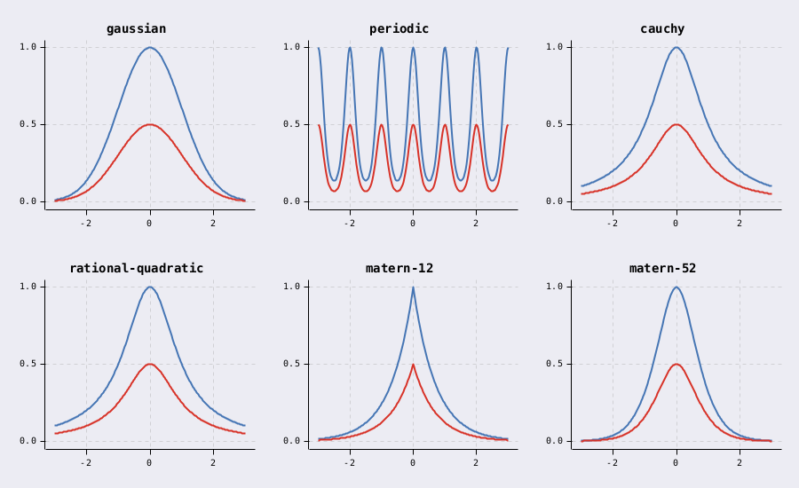
29.6.5 Covariance matrices
The same kernels’ covariance between every pair of points of [-1, 1].
Source: cljplot - covariance matrices (unsaved sketch).
(plot/render-image
{:data (vec (for [kernel kernels
:let [f (k/kernel kernel) points (m/slice-range -1.0 1.0 40)]
x points y points]
{:kernel (name kernel) :x x :y y :value (f [x] [y])}))
:mapping {:x :x :y :y :color :value :facet :kernel}
:charts [(chart/tile)]
:scales {:facet {:domain (mapv name kernels)}}
:aspect :iso
:labels {:title "Covariance matrices" :x nil :y nil}}
{:width 900 :height 650})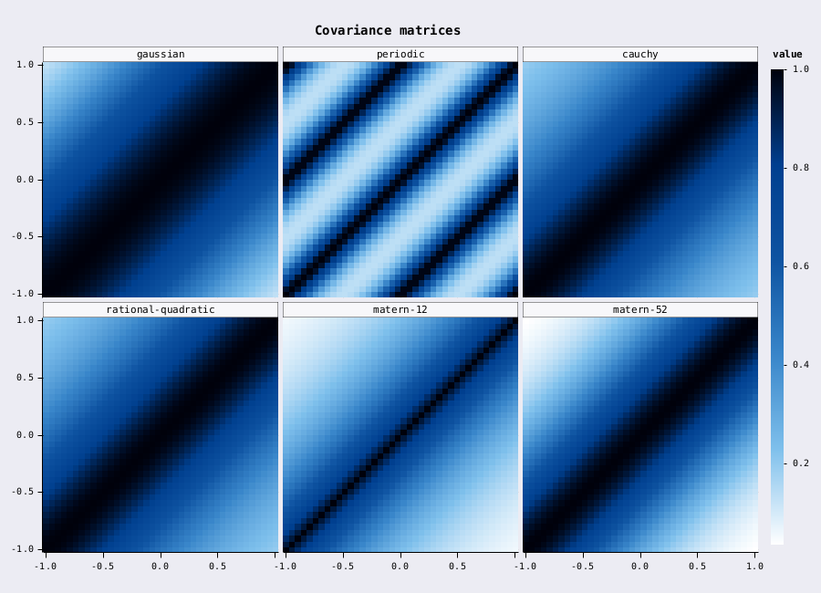
29.6.6 Lollipops
Frequencies of two small samples as lollipops, and a fine histogram as lollipops under its density.
Source: cljplot - frequencies and histogram lollipops (unsaved sketches).
(let [frequencies-rows (fn [sample label offset]
(map (fn [[value n]] {:value (+ (double value) (double offset)) :n n :sample label})
(frequencies sample)))
g (r/rng :mersenne 20)
sample (vec (repeatedly 1300 #(r/grandom g)))
bins (map (fn [{:keys [mid probability step]}] {:x mid :y (/ (double probability) (double step))})
(:bins-maps (stats/histogram sample 130)))]
(plot/render-image
(plot/arrange [{:data (concat (frequencies-rows [1 2 2 3 1 12 2] "a" -0.12)
(frequencies-rows [3 4 5 4 5 4 3 2 3 4 11 12] "b" 0.12))
:mapping {:x :value :y :n :color :sample}
:charts [(chart/segment {:yend 0}) (chart/scatter {:size 8})]
:labels {:title "frequencies" :x "value" :y "count"}}
{:data bins :mapping {:x :x :y :y}
:charts [(chart/segment {:yend 0 :color [69 117 180 160]}) (chart/scatter {:size 3})
(chart/density {:data (map (fn [v] {:x v}) sample) :mapping {:y nil} :bandwidth 0.04
:fill [215 48 39 80] :color [215 48 39 160]})]
:labels {:title "histogram lollipops and a density" :x nil :y "density"}}]
{:columns 2})
{:width 1000 :height 420}))
29.6.7 Logo
The cljplot2 logo, after the old one: 2500 random pixels of the word, jittered, coloured along x, of random sizes, with density margins. (The same recipe writes img/logo.png in the logo demo - keep the two in sync.)
Source: cljplot - logo.
(let [text-width 250 text-height 85
logo-font (with-open [in (io/input-stream (io/file "dev/resources/logo/Comfortaa-Bold.ttf"))]
(Font/createFont Font/TRUETYPE_FONT in))
pixels (p/to-pixels (c2d/with-canvas-> (c2d/canvas text-width text-height)
(c2d/set-background :black)
(c2d/set-color :white)
(c2d/set-font (font/resolve-font logo-font :plain 56))
(c2d/text "cljplot2" 4 62)))
g (r/rng :mersenne 2)
points (->> (repeatedly #(vector (r/irandom g text-width) (r/irandom g text-height)))
(filter (fn [[x y]] (pos? (double (c/luma (p/get-color pixels x y))))))
(take 2500)
(mapv (fn [[x y]] {:x (+ (double x) (r/grandom g))
:y (+ (double (- text-height (long y))) (r/grandom g))
:size (* 10.0 (m/pow (r/drandom g 0.1 1.0) 3.0))})))
margin-density (chart/density {:fill [60 60 130 170] :color [40 40 100] :mapping {:color nil :size nil}})]
(plot/render-image
{:data points
:mapping {:x :x :y :y :color :x :size :size}
:charts [(chart/scatter {:stroke-color :none})]
:scales {:color {:range (mapv #(c/set-alpha (c/color %) 110) [[30 50 140] [120 50 160] [200 40 90] [230 110 20]])
:legend false}
:size {:range [0.5 10] :area true :legend false}}
:margins {:top {:charts margin-density :size 22} :right {:charts margin-density :size 22}}
:labels {:x "cljplot2 - functional plotting library" :y nil}}
{:width 600 :height 300}))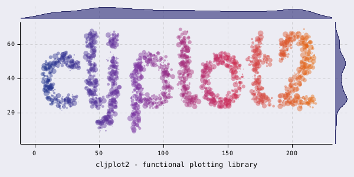
29.7 Basic charts
The showcase images of the old README, with synthetic data: a skewed sample (skewed, most values 2-8, a tail to 20) and a long-tailed one (tailed, 0 to about 55).
(def skewed
(let [g (r/rng :mersenne 21)]
(vec (repeatedly 2000 (fn [] {:v (+ 1.5 (m/exp (r/grandom g 1.0 0.45)))})))))(def tailed
(let [d (r/distribution :gamma {:shape 1.2 :scale 8.0 :rng (r/rng :mersenne 22)})]
(vec (repeatedly 150 (fn [] {:v (r/sample d)})))))29.7.1 One-dimensional charts
An interval, a box with points, a density line, extents (minimum - mean - maximum), a rug and strips of points.
Source: cljplot showcase - bar, box, density-line, min-max-mean, rug, strip, strip-distorted (1, 2, 3, 4, 5, 6, 7).


(let [strip (fn [title data charts] {:data data :mapping {:x :v} :charts charts :labels {:title title :x nil :y nil}})
halves [{:v -20.0} {:v 10.0}]]
(plot/render-image
(plot/arrange [(strip "interval" halves [(chart/extent {:method :min-max :center :none :line-width 22})])
(strip "box with points" tailed [(chart/box {:outliers true}) (chart/stripplot {:size 6 :rng (r/rng :mersenne 23)})])
(strip "density" skewed [(chart/density)])
(strip "min - mean - max" tailed [(chart/extent {:method stats/extent :shape \V :size 12})
(chart/rug {:color [69 117 180 160]})])
(strip "rug" tailed [(chart/rug {:thickness 16})])
(strip "distorted strip" tailed [(chart/stripplot {:size 9 :color [69 117 180 60] :rng (r/rng :mersenne 24)})])
(strip "strip" tailed [(chart/stripplot {:size 9 :jitter 0.0 :color [69 117 180 90]})])]
{:columns 1})
{:width 800 :height 800}))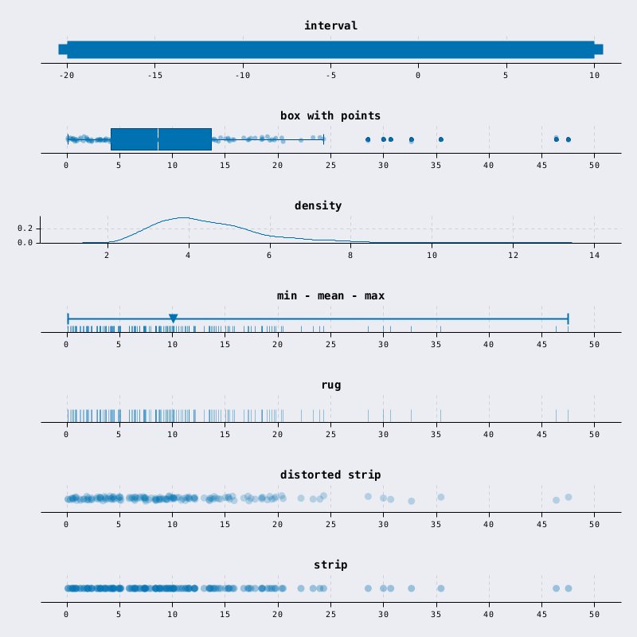
29.7.2 Distributions
A filled density, a violin with its box, a mirrored histogram of two samples and a histogram in percent.
Source: cljplot showcase - density, violin, histogram, histogram-percents (1, 2, 3, 4).


(let [g (r/rng :mersenne 25)
two (vec (concat (map #(assoc % :sample "a") skewed)
(repeatedly 2000 (fn [] {:v (+ 1.5 (m/exp (r/grandom g 1.1 0.35))) :sample "b"}))))]
(plot/render-image
(plot/arrange [{:data skewed :mapping {:x :v} :charts [(chart/density {:fill :color})] :labels {:title "density" :x nil}}
{:data skewed :mapping {:x :v} :charts [(chart/violin {:inner :box})] :labels {:title "violin" :x nil :y nil}}
{:data two :mapping {:x :v :color :sample} :charts [(chart/histogram {:position :mirror :bins 60})]
:labels {:title "mirrored histogram" :x nil}}
{:data skewed :mapping {:x :v} :charts [(chart/histogram {:bins 60 :y :percent})]
:labels {:title "histogram, percent" :x nil}}]
{:columns 2})
{:width 1000 :height 600}))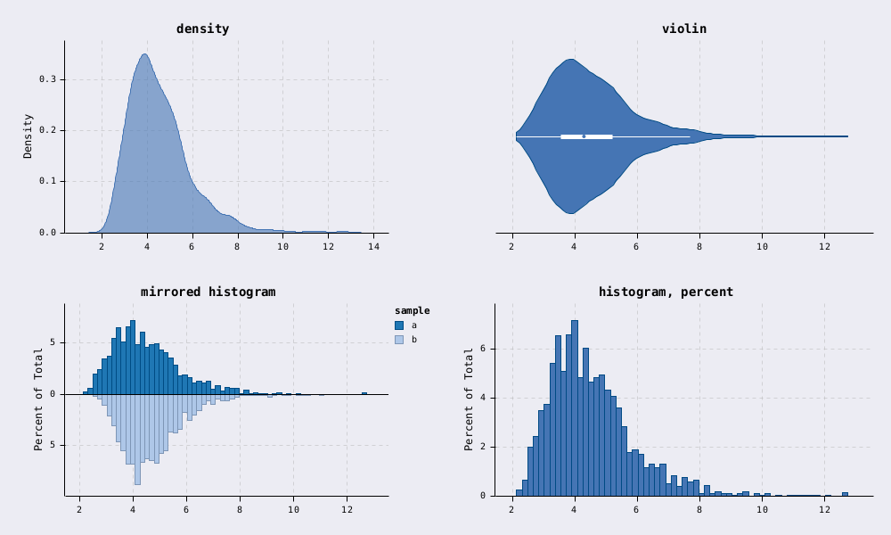
29.7.3 Lollipop histogram
Bin counts as lollipops, the sample as a strip on top.
Source: cljplot showcase - lollipops2.

(plot/render-image
{:data (map (fn [{:keys [mid count]}] {:x mid :y count}) (:bins-maps (stats/histogram (map :v skewed) 60)))
:mapping {:x :x :y :y}
:charts [(chart/segment {:yend 0}) (chart/scatter {:size 5})]
:margins {:top {:charts (chart/stripplot {:data skewed :mapping {:x :v} :size 5 :color [69 117 180 60]
:rng (r/rng :mersenne 26)})
:size 30}}
:labels {:title "Lollipop histogram" :x nil :y "count"}}
{:width 900 :height 550})
29.7.4 Bars
Two groups per category, side by side, negative values to the left.
Source: cljplot showcase - bars.

(plot/render-image
{:data [{:c "a" :g "1" :v -21} {:c "a" :g "2" :v -3.8} {:c "b" :g "1" :v -2.1} {:c "b" :g "2" :v 18}
{:c "c" :g "1" :v 33} {:c "c" :g "2" :v 22} {:c "d" :g "1" :v 11} {:c "d" :g "2" :v 22}]
:mapping {:x :v :y :c :color :g}
:charts [(chart/bar {:position :dodge})]
:labels {:title "Dodged bars" :x nil :y nil}}
{:width 800 :height 550})
29.7.5 Connected scatter
Twenty points joined in their order by a smooth parametric curve, sized by a value.
Source: cljplot showcase - connected.

(let [g (r/rng :mersenne 27)
rows (vec (repeatedly 20 (fn [] {:x (r/drandom g 6 17) :y (r/drandom g 0 8) :s (r/drandom g)})))]
(plot/render-image
{:data rows :mapping {:x :x :y :y}
:charts [(chart/line {:sort false :curve :parametric :color [69 117 180]})
(chart/scatter {:mapping {:size :s} :color [150 30 30]})]
:scales {:size {:range [4 22] :legend false}}
:labels {:title "Connected scatter"}}
{:width 800 :height 600}))
29.7.6 Dense scatter
5000 points of two bounded, correlated variables with quantised values (the original’s data, Kaggle columns cont4 / cont8, aren’t available): bands show the quantisation.
Source: cljplot showcase - cont4_cont8.

(let [g (r/rng :mersenne 28)
quantise (fn [v steps] (/ (m/round (* (double v) steps)) steps))]
(plot/render-image
{:data (repeatedly 5000 (fn [] (let [u (r/drandom g)
x (m/constrain (+ 0.2 (* 0.75 u) (r/grandom g 0.0 0.12)) 0.18 0.97)
y (m/constrain (+ 0.25 (* 0.6 u) (r/grandom g 0.0 0.15)) 0.25 0.98)]
{:x (quantise x 150) :y (quantise y 90)})))
:mapping {:x :x :y :y}
:charts [(chart/scatter {:size 5 :color [40 80 160 120]})]
:labels {:title "Two quantised variables" :x "cont4" :y "cont8"}}
{:width 600 :height 600}))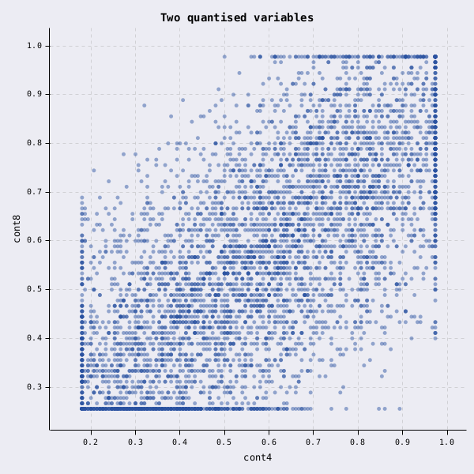
29.7.7 Noise curves
Three curves of value noise.
Source: cljplot showcase - functions.

(plot/render-image
{:charts [(chart/function {:f {"a" (fn [x] (r/vnoise (* 3.0 (double x)) 0.5))
"b" (fn [x] (r/vnoise (* 3.0 (double x)) 10.5))
"c" (fn [x] (r/vnoise (* 3.0 (double x)) 20.5))}
:domain [-4 4] :mapping {:color :function}})]
:labels {:title "Value noise curves"}}
{:width 1000 :height 320})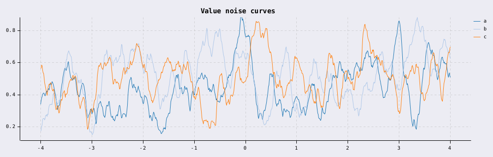
29.7.8 Line with a spline
A random series, its points and a cubic spline through them.
Source: cljplot showcase - line.

(let [g (r/rng :mersenne 29)
rows (map-indexed (fn [i y] {:x i :y y}) (reductions + 10.0 (repeatedly 99 #(r/grandom g 0 1.5))))]
(plot/render-image
{:data rows :mapping {:x :x :y :y}
:charts [(chart/line {:interpolator :cubic :color [200 40 120] :width 1.5})
(chart/line {:color [69 117 180 150]})
(chart/scatter {:size 4})]
:labels {:title "A line, its points and a spline"}}
{:width 800 :height 600}))
29.7.9 Rugs per category
Source: cljplot showcase - rugs.

(let [g (r/rng :mersenne 30)]
(plot/render-image
{:data (concat (repeatedly 1000 (fn [] {:c "a" :v (r/grandom g -0.2 0.9)}))
(repeatedly 1000 (fn [] {:c "b" :v (r/grandom g 2.0 1.2)})))
:mapping {:x :c :y :v}
:charts [(chart/rug {:color [69 117 180 60]})]
:labels {:title "A rug per category" :x nil :y nil}}
{:width 450 :height 450}))
29.7.10 Scatter with histograms
Source: cljplot showcase - scatter-sides.

(let [g (r/rng :mersenne 31)]
(plot/render-image
{:data (repeatedly 1000 (fn [] (let [x (r/drandom g -7 18)] {:x x :y (+ (* 1.4 x) 5.0 (r/grandom g 0 4))})))
:mapping {:x :x :y :y}
:charts [(chart/scatter {:size 3})]
:margins {:top {:charts (chart/histogram {:bins 15})} :right {:charts (chart/histogram {:bins 20})}}
:labels {:title "Scatter with histogram margins"}}
{:width 600 :height 600}))
29.7.11 Two groups with a rug
Source: cljplot showcase - scatters2-rug.

(let [g (r/rng :mersenne 32)
group (fn [n mu sd label] (repeatedly n (fn [] {:x (r/grandom g mu sd) :y (r/grandom g mu sd)
:s (m/pow (r/drandom g) 4.0) :g label})))]
(plot/render-image
{:data (concat (group 1000 0.0 1.0 "a") (group 100 2.0 0.8 "b"))
:mapping {:x :x :y :y :color :g :size :s}
:charts [(chart/scatter {:stroke-color :none})]
:margins {:right {:charts (chart/rug {:mapping {:size nil} :thickness 16}) :size 25}}
:scales {:color {:range [[60 100 220 200] [140 20 20 120]]} :size {:range [2 18] :legend false}}
:labels {:title "Two groups, sized points, a rug of y"}}
{:width 800 :height 600}))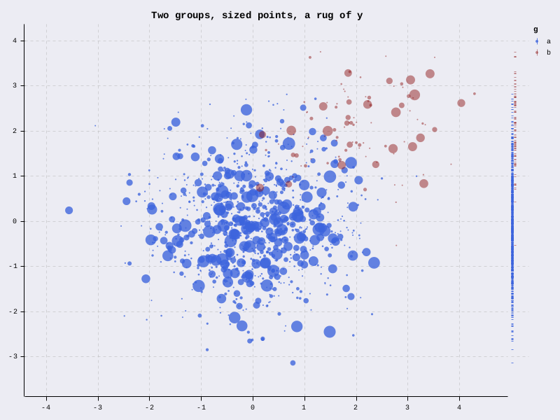
source: notebooks/galleries/cljplot_extras.clj